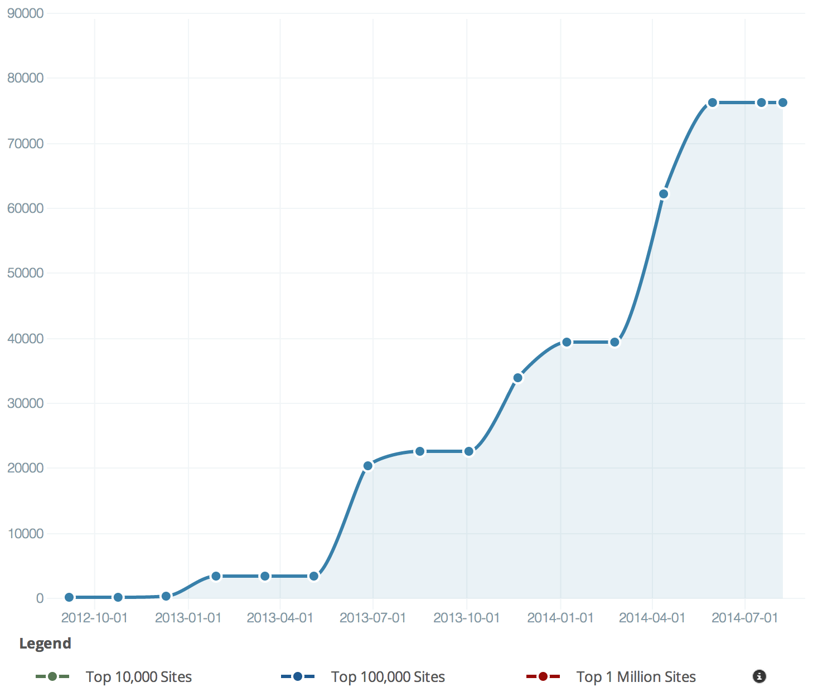
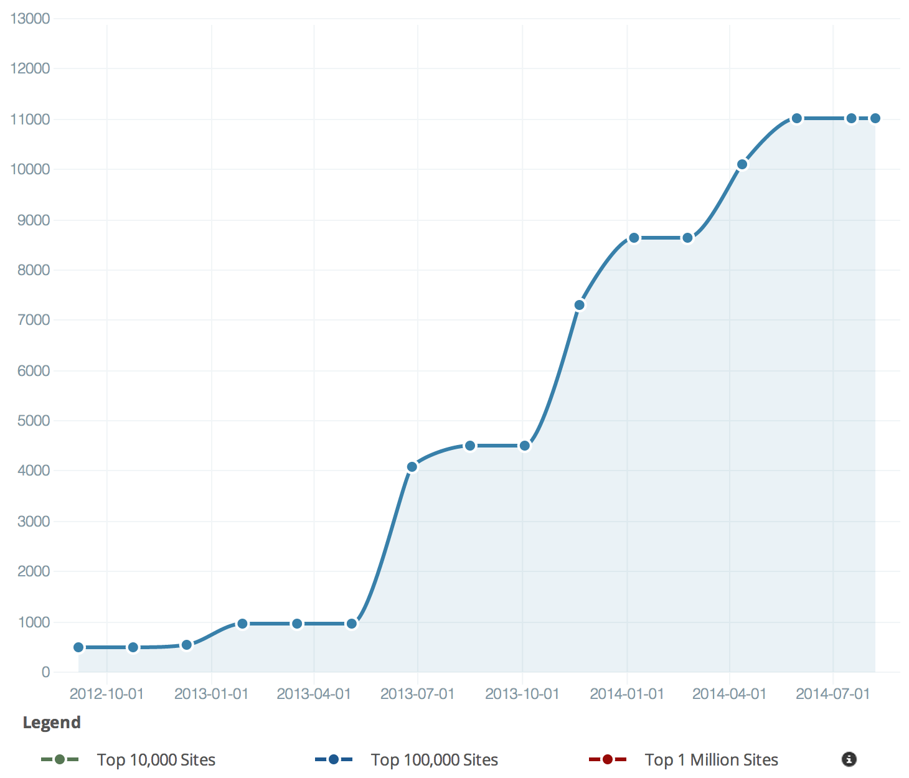

JavaScript
Mesaninen 2014
Arild Tvergrov & Mikkel Steine
Program
- Hvorfor JavaScript?
- Historikk
- Bruksområder
- Språket JavaScript
- Fremtiden
- Rammeverk
- Bygging
- Testing
- Lære mer...
Hvorfor JavaScript?
Alle bruker det.
Suksesshistorier
- Norman Antivirus
- KISS
Historikk
JavaScript blir til...
- 1996 mar: Introdusert i Netscape Navigator 2.0, laget for å slippe lange rundturer til server.
- 1997 okt: Dynamisk HTML kom i IE4.
- 1999/2000: DOM kom med IE5, NS6 og Opera.
- 1999 des: Standarden ECMAScript, utgv. 3.
Treg utvikling...
- 2000-tallet: JS-motorene henger ikke med i svingene
- IE6 legger hemsko på utviklerne
- Intrepretert språk - tregt
Renessanse
- 2008: Google Chrome med V8: JS-motor med JIT-compiler
- Andre fulgte etter:
- Safari 4: SquirrelFish Extreme
- FireFox 3.5: TraceMonkey
- IE 9: Chakra
- JavaScript fikk et skikkelig ytelsesløft!
Implementér!
- Det offisielle navnet på standarden er ECMAScript
- Siste versjon er 1.8.5
- Mange forskjellige implementasjoner av ES
- JavaScript 1.8.5 (ES5+, Firefox)
- JScript 9.0 (ES5, Microsoft)
- Nashorn 1.8.0 (ES5.1, Java/Oracle)
- ActionScript (ES3, Flash og Flex)
- QtScript (ES3, Qt)
- ExtendScript (ES3, Adobe CS)
- ... og mange flere
- Alle implementasjoner har særegenheter i forhold til standarden.
Bruksområder
Mange muligheter!
- JavaScript ble opprinnelig laget for å redusere behov for lasting av HTML for små endringer.
- JS støttes av alle nettlesere, også mobil.
- Så og si alle web-sider bruker litt eller mye JS.
- Man kan bruke JS til å lage avansert grafikk:
- Canvas (Fabric.js, Paper.js, etc.)
- SVG (Raphael.js, D3.js, etc.)
- WebGL (tree.js, GLGE, Canvas 3d JS, etc.)
- PhoneGap (krossplatform mobilapps)
- Windows 8-apps skrives i JS
- Node.js gjør det mulig å lage backend også i JS.
Ting du ikke(?) visste var mulig
- Aksesser web-kamera og lag skype-klone!
- Koble deg til Arduino med node.js og seriellport-bibliotek.
- Bruk Microsofts Kinect SDK og kinect.js slik at man kan bruke Kinect i nettleseren.
- Lag 3D-spill i JS med WebGL.
- Kontroller 3D-spill med spillkontroller.
- Spill Flash-ting på din iPad med JS (Bikeshed).
- Lag krossplatform-apps med PhoneGap.
- Med Emscripten kan du kjøre f.eks. Python eller Ruby i nettleseren (repl.it).
- Krossplatform desktop-applikasjoner med app.js.
- Med node.js kan man lage en web-server i JS.
Språket
Grunnleggende
- Imperativt og strukturert: if, while, for, etc. C-stil.
- Dynamisk: Type følger verdi, ikke variabel. "Alt" er objekter og kan utvides som man vil.
- Funksjonelt: Funksjoner er også objekter, og kan nøstes også.
- Prototype-basert: Bruker prototyper (altså gjenbruk av eksisterende objekt) i stedet for klasser og arv.
var kurs = 5.67;
var f = function(x) { return x * kurs; };
function ytreFunksjon() {
function indreFunksjon() {
alert("Hei!");
}
indreFunksjon();
}
Prototyper
function Ansatt(navn, tittel, fodt) {
this.navn = navn;
this.tittel = tittel;
this.fodt = fodt;
}
var fred = new Ansatt("Fred Flintstone", "Caveman", 1970);
Ansatt.prototype.salary = null;
Ansatt.salary = 20000;
Datatyper
- Svakt typet
- Operasjoner på typer i JS er ikke helt som man forventer
- Alt er objekter, så konvertering av type betyr oppretting av nytt objekt og konvertering av verdi
- Ikke opprett primitiver med
new. Ting blir mer komplekst og tregere. - De forskjellige typene er:
String, Number, Boolean, Array, Object, Undefined, null - Bruk typeof for å sjekke typen av verdien.
var x; // undefined
x = 10; // number
x = "Bøtteknott"; // string
x = typeof x; // "string"
Number
- Alle tall i JS representeres med denne typen.
- Integer finnes ikke!! Number implementeres med en double.
- Man kan skrive tall med eller uten desimaler:
34.00 == 34 - Man kan bruke vitenskapsnotasjon:
1e2 == 100; 1e-2 == 0.01 - Tall oppfører seg som en double i C/Java med de utfordringer det medfører.
- Bruk < og > i stedet for = og != når man sammenligner tall.
- Tall blir automatisk konvertert til og fra andre typer om man prøver å bruke dem.
- Om JS ikke klarer å konvertere en type til et tall så blir verdien
NaN(Not a Number). Inifinityog-Infinityer mulige verdier.
x = 10 + "5"; // ?
x = "5" + 10; // ?
x = "10" - 5; // ?
x = 5 + "e4"; // ?
x = "4r" - 3; // ?
x = parseInt("4r") - 3; // ?
x = parseInt("a3") - 3; // ?
x = 1.000001 + 1; // ?
x = 1.000001 - 1; // ?
0.1.toFixed(20); // "0.10000000000000000555"
x = 9999999999999999; // ?
function isNumeric(n) {
return !isNaN(parseFloat(n)) && isFinite(n)
}
Boolean
(Falsy og thruthy)
- Følgende verdier er falsy:
false, 0, "", null, undefined, NaN - Alt annet er truthy!
- Bruk ===, !==, >==, <== i stedet for ==, !=, >=, <= til alle sjekker. == konverterer, === gjør det ikke.
- Man må ikke bruke new Boolean(), da denne alltid er true(thy).
var c = (false == 0); // true
var d = (false == ""); // true
var e = (0 == ""); // true
var f = (null == false); // false
var g = (null == null); // true
var h = (undefined == undefined); // true
var i = (undefined == null); // true
var j = (NaN == null); // false
var k = (NaN == NaN); // false
var l = (false == 0); // true
var m = (false === 0); // false
var x = true - 1; // ?
x = new Boolean(false);
if (x) {
// Kommer vi hit?
}
String
- Kan bruke både ' eller ", f.eks. om man har en streng med et av disse tegnene i seg, så kan man bruke det andre tegnet.
- "Backslash" (\) brukes for å escape et spesialtegn.
- Ikke bruk
new String, som gir mange uheldig bieffekter. Lag vanlige strengprimitiver. - En streng har masse attributter og funksjoner, f.eks.
"abc".length => 3og" abc ".trim() => "abc"
x = "abc";
x = x.substr(0,2); // "ab"
Object
- Alt bortsett fra primitivene i JS er objekter, også funksjoner.
- Man lager et objekt ganske enkelt med
var obj = { bedrift : "Mesan", adressse : "HI20" }; - Du legger enkelt til nye verdier med
obj.telefonnr = "22334455"; - Denne oppførselen er felles for alle objekter, selv om Array er litt spesiell...
- Å legge til en funksjon til et objekt er like enkelt som å legge til verdier.
var bedrift = { navn : "Mesan AS", adresse : "HI20", telefonnr : "22334455" };
bedrift.ring = function() { alert(this.telefonnr); }
Array
- Et spesielt objekt med litt anderledes aksessering; man bruker
[]i stedet for . new Array(1,2,3) === [1,2,3]- Alle elementene i en array kan ha forksjellige typer.
- Første element starter på 0, som i C/Java:
([1,2,3])[0] === 1 typeof [1,2,3] == "object"
Undefined og null
- En variabel er undefined når den ikke har fått noen verdi.
- En variabel er null når man setter den til null.
- Disse to er altså ikke det samme, og en verdi som ikke er satt blir ikke automatisk null.
Scope (!)
- Alle funksjoner har sitt eget scope, som betyr at alt som opprettes i scopet til en funksjon er bare tilgjengelig i det scopet.
- Det lokale scopet legges til en kø av scope helt ut til det globale scopet.
- To funksjoner som opprettes ved siden av hverandre har adskilte scopes.
- Variable man ikke oppretter med var foran blir endret om den finnes i scope-chain eller opprettet globalt (en del av
window). - Alle variable/funksjoner man kaller som ikke er en del av scopet må letes fram i scope-rekka.
function f() {
x = 10; // window.x opprettes/oppdateres
var y = 20; // opprettes i lokalt scope til f(), ikke tilgjengelig utenfra
function visKoordinat() {
var z = 30;
alert("hei " + x + "," + y + "," + z);
}
z = 40; // Ser ikke z, oppretter en global z
visKoordinat();
}
function f2() {
y = 30; // Ser ikke y, oppretter y globalt
x = 25; // endrer global x
}
Hoisting
- Oppretting av alle variable blir flyttet til toppen av scopet. Setting av verdi forblir der de er.
- Vær obs på bruk av variable med samme navn og når de blir satt og brukt.
- Legg alle variable i toppen av alle funksjoner, alltid. Git litt bedre ytelse også.
var global_i;
(function() {
var x = 20,y,z; // Initisering
for (;x--;) {
global_i = x; // vi prøver å sette global variabel...
alert("Plagsom! " + i);
}
var global_i = 0; // Ha! global_i er ikke global likevel.
})();
Math
Mathinneholder de vanligste mattefunksjonene og noen predefinerte konstanter.- Tall kan skrives på forskjellige formater:
10 == 0x10 == 012, men man har ikke tilsvarende for binære tall (må bruke streng ogparseInt("1010",2)). - Også bit-mønster-operatorer er effektive: &, |, ~, ^, << og >>
Date
- I
Date-objektet finner man mange nyttige funksjoner for dato og tid. - Man kan sammenligne to
Date-objekter.
Math og Date er implementert i C++. Ikke prøv å erstatte noen av funksjonene i disse med egen JS-kode.
RegExp
- Man kan lage
RegExp-objekter med new, men det er ikke nødvendig. Bruk heller /mønster/modifikatorer - Bruker du samme mønster mange ganger, kan du lagre den i en variabel og bruke f.eks. exec på den.
var pattern = /^[A-Z]$/i;
var res = str.replace(/(gutt|jente)/i, "menneskebarn");
var t = /du/i.exec("Du er der."); // 'Du'
if (str.match(pattern).length > 0) { /* strengen matcher mønsteret */ }
DOM
- Document Object Model holder alle elementene i en webside i et tre i minnet.
- Du har direkte tilgang til denne med
document. - Med
document.getElementById("minId"),getElementsByClassNameellergetElementsByNamekan man finne elementer i DOM. - Traversering av DOM er kostbart og bør gjøres med forsiktighet. Mellomlagre ting du vil bruke mer enn en gang.
Hendelser
- Hendelser ("events") håndteres ved at man setter opp callback-funksjoner knyttet til et element og en hendelse.
- Den måten folk flest begynner å sette opp eventer på er å legge de til i HTML. F.eks.
<a href="#" onclick="doSomething()"> - En ryddigere måte er å bruke
element.addEventListener("click", function(){ ... })direkte på DOM-objektet. - IE er selvfølgelig vanskelig og der heter funksjonen i v8 og eldre
attachEvent. - Man kan legge til event-lyttere til alle DOM-objekter, også
windowog man kan legge til flere til hvert element. - Man kan også fjerne og fyre av eventer (dispatchEvent og removeEventListener).
var useCapture = false; // Indre element håndteres først, true gjør motsatt
var myFunction = function(event) {
var element = this; // elementet du klikket på
var faktiskElement = event.currentTarget;
}, useCapture);
var x = document.getElementById("myBtn");
if (x.addEventListener) { // Alle nettlesere bortsett fra IE8 og eldre
x.addEventListener("click", myFunction, useCapture);
} else if (x.attachEvent) { // IE8 og eldre
x.attachEvent("onclick", myFunction, useCapture);
}
x.removeEventListener("click", myFunction);
Globale funksjoner
- JavaScript har noen få støttefunksjoner. Et par av dem er verdt å nevne:
eval()er en funksjon som tar input gjennom JS-parseren og kjører innholdet. eval is evil!encodeURI(),decodeURI()brukes får å sikre at en URL er godkjent og at alle spesialtegn er håndtert. Rører ikke spesialtegn som er en del av fullverdig URL.encodeURIComponent(),decodeURIComponent()gjør tilsvarende, men erstatter også alle tegn i en gyldig URL.parseInt()ogparserFloat()gjør akkurat det, men trengs aldri i praksis.parseInthar en bonus ved at den med ekstra parameter kan gi tallene i hex eller andre tallsystemer.
jQuery
Enklere hverdag
- Skjuler forskjeller mellom implementasjoner. "Alle" bruker det.
- Hovedbruksområder:
- Henting/manipulering av elementer
- Hendelser
- Animasjoner
- AJAX
- "Unobtrusive", endrer ikke oppførsel til eksisterende JS.
$()ellerjQuery()er utgangspunktet for all jQuery-kode- Generell fremgangsmåte: Finn objekter og manipuler/les/skriv.
- Kan hekte på en lang rekke kall som gjør koden mer kompakt.
(function() {
function showLink() { var aObj = $(this); /* ... */ }
function hideLink() { /* ... */ }
function followLink() { /* ... */ }
$("a").
filter(".external").
css("color", "#200040").
delegate("mouseover", showLink).
delegate("mouseout"), hideLink).
delegate("click", followLink).
end().
filter(".internal").
css("color", "#505020");
})();
Selectors
- Programmerervennlig måte å finne elementer i DOM:
$(".knapp") - Bygger på CSS-selectors:
.class, #id, div - Mer avansert utvalg med f.eks.:
:first, :last, :gt(), :lt(), :even, :odd - Velg elementer basert på innhold:
:containts(), :has(), :empty() - Velg elementer basert på verdi/attributter:
[navn="verdi"] - +++
- Resultatet er et objekt som inneholder en Array med DOM-elementer, en jQuery-samling.
Manipulering
- jQuery har endel nyttige funksjoner for manipulering av DOM-elementer.
.wrap()m.fl. legger til element rundt elementet man angir..html(), .append(), .prepend()m.fl. endrer innholdet i et element..after(), .before()legger til elementer utenfor gjeldende element.- Man kan bruke
.detach()for å jobbe med ting utenom DOM.
Hendelser
- "Events" er enklere i jQuery, og forskjeller mellom nettlesere skjules bak enkle funksjoner.
$(document).ready()kalles når HTML er ferdig lastet, men man trenger ikke bruke denne..click()og en rekke andre events kan settes på en jQuery-samling.- Event-objektet som sendes med er samme objekt som man er vant med fra vanilla js og inneholder mange nyttige ting.
- Bruk
.delegate()for all hendelseshåndtering! Asynkront, ryddig og effektivt.
Animasjoner
- Med
.animate()så kan man lage mye fancy. - Hovedlinjene er at man kan gi en CSS-stil som animasjonen skal bevege seg mot, og styre hastighet og mye annet.
- Enkle animasjoner som gradvis visning kan gjøres med
.hide(), .show(), .toggle(), .fadeIn(), .fadeOut()osv.
AJAX
- Man kan bruke funksjonen
$.ajax()eller kortversjonene$.get()og$.post() - Resultatet håndterer man med en callback-funksjon.
- Med
.load()kan man hente resultatet av AJAX-kallet rett inn i et element. - Du har mange muligheter for spesialisering i parametere til
$.ajax().
$.get("some/url.php?data", function(data) {
// Bruk data til noe
});
$.ajax({
url: "some/url.php",
data: "parameter=on",
success: function(data) {
// Bruk data til noe
},
dataType: "html" // xml, json, script, etc.
});
$.getJSON("some/url.json", function(jsondata) {
// Her kan du bruke jsondata direkte
var antall = jsondata.brukerListe.length;
});
Ytelse
Flaskehalser
- Lasting og kjøring
- Variable og data
- DOM
- Løkker og rekursjon
- UI-tråden
- Kodepraksis
Lasting og kjøring av JavaScript
- Nettlesere venter mens JS laster, evalueres, kjører.
- Hver
<script>-tag blir kjørt før resten av HTML+CSS lastes. - Putt alle
<script>tags i bunn av<body>og dropponready(). - Ikke bruk inline JS
- Komprimer, merge og last JS-filer dynamisk med en loader.
- Fjern kode som ikke brukes (utkommentert kode fjernes av komprimeringsprogrammer).
Variable og data
- Scope chain gjør at man må passe på hva man bruker. Traversering i scope chain er veldig kostbart.
- Lag lokale kopier av yttre variable.
- Unngå gjentatte kall til globale variable som
windowoglocation.href. - Lokale scope er alltid veldig kjapt, og blir alltid sjekket først.
DOM
- Å aksessere DOM er veldig kostbart, gjør det så sjelden som mulig og ikke i løkker!
- Endringer i DOM gir reflow hver gang.
- Ved mange forandringer på DOM-objekter kan man skjule-endre-vise for å redusere “reflow”.
- Bruk låst layout (CSS) der du kan for å redusere omfang av “reflow”.
- Mange events er kostbart (lasting/minne/prosesseringstid). Bruk event-deligering i stedet for click-event.
- Ved store lister kan man bruke
cloneNodefor å bygge disse utenfor DOM først. - Lagre jQuery-søk på elementer om du bruker dem flere ganger.
(function(){
var div = document.createElement(“div”),
hundegaard = $(“#hundegaard”);
function luftHunder(hunder) {
var flokk = div.cloneNode();
var hund = div.cloneNode();
hund.className = “hund”;
var i = hunder.length;
for (;i--;) {
var enhund = hund.cloneNode(true);
endhund.innerHMTL = hunder[i].navn;
flokk.appendChild(enhund);
}
hundegaard.html(flokk);
}
hentData(luftHunder);
})();
Løkker og rekursjon
- Man får liten hjelp om man skriver ineffektiv kode.
- Jo mer som gjøres inne i løkker, jo tregere blir det.
for-in-løkker og$.eacher kjekt, men tregt.- Rekursjon er risikabelt og tungt.
- En statisk
Arrayer betydelig raskere ennswitchellerif-then-else. - Hold mest mulig av arbeidet utenfor løkkene.
UI-tråden
- En seriell kø for alle UI-endringer. Pauser både UI og JS.
- Eksekvering av JavaScript gjør at UI-køen settes på vent. Det “henger!”
- Henting av data ved lasting av web-siden hindrer resten av lastingen.
- Bruk setTimeout for å utsette lasting av tunge lister etc.
- Lasting av data kan splittes opp. (Last f.eks. neste side i bakgrunnen.)
- Nettlesere har ofte en “time-out” om eksekvering av JS ikke fullfører innen en viss tid.
- La initiell JS-kode være så minimal som mulig. Bruk
setTimeoutpå resten, eller kjør den når brukeren gjør noe (events).
function gjorFlereTungeTingMedObjekt(objekt) {
// Liste med funksjons-referanser
var oppgaver = [oppgave1, oppgave2, oppgave3];
setTimeout(function() {
// Neste oppgave:
var oppgave = oppgaver.shift();
oppgave(objekt);
// Se etter flere oppgaver:
if (oppgaver.length > 0) {
setTimeout(arguments.callee, 25);
}
},25);
}
Kodepraksis
- eval() is evil – og veldig tregt. Bruk en funksjon som parameter til setTimeout/setInterval i stedet for streng.
- Løpende oppretting av objekt eller liste er tregt. Opprett objekter og lister i én operasjon hvor mulig.
- Cache så mye som mulig.
- Bruk Math og bit-operatorer. Ikke lag egen matte-kode!
- Ikke gi JS-motoren mer jobb enn nødvendig: Skriv korrekt kode! Bruk jshint el.
- Bruk CSS der CSS kan erstatte JS.
- Ikke forsøple globalt namespace (
window). - Pakk koden.
- Bruk nettleserens inspector og sjekk profilering og nettverkstrafikk.
Fremtiden
EcmaScript 6
(«ES.next»)
Når kommer ES6?
Ratifiseres i desember 2014.
Implementeres fortløpende i moderne nettlesere.
Hva blir (er?) nytt?
- Block Scope
- Klasser
- Arrows
- Promises
- Moduler
- Generators
- ++
Block Scope
ES5 har global og function scope, men ikke block scope:if (true) {
var a = 'abc';
}
a; // <= 'abc'
Block Scope
ES6 har block scope med nøkkelordetlet:if (true) {
var a = 'abc';
let b = 'def';
}
a; // <= 'abc'
b; // <= undefined
Klasser
ES5:function Vehicle(owner) {
this.owner = owner;
}
Vehicle.prototype.printOwner = function () {
console.log('The owner of this vehicle is ' + this.owner);
};
var myVehicle = new Vehicle('Arild');
Klasser
ES6:class Vehicle {
constructor(owner) {
this.owner = owner;
}
get owner() {
return this.owner;
}
printOwner() {
console.log('The owner of this vehicle is ' + this.owner);
}
}
let myVehicle = new Vehicle('Arild');
Klasser
ES6 støtter også arv:class Vehicle {
constructor(owner, canFly) {
this.owner = owner;
this.canFly = canFly;
}
printOwner() { /* ... */ }
}
class Plane extends Vehicle {
constructor(owner) {
super(owner, true);
}
}
let myPlane = new Plane('Arild');
myPlane.canFly; // <= true
Arrows
Hva ES6 løser:var nr = [0, 1, 2];
var squareNr = nr.map(function (x) {
return x * x;
});
console.log(squareNr);
Arrows
ES6 løser det slik:let nr = [0, 1, 2];
let squareNr = nr.map(x => x * x);
Promises
ES5: Callbacks From Hell
doThis(function () {
doThat(function () {
pleaseDoThisToo(function () {
andEventuallyDoThisAsWell(function () {
ohAndAlmostForgot(function () {
console.log('Done!');
});
});
});
});
});
Tredjepartsbiblioteker gir god Promise-støtte i ES5:
Q.js, jQuery, RSVP.js, ++
Promises
ES6: Innebygd støtte for promises
Promises
Promise.all()
let p1 = new Promise((resolve, reject) =>
setTimeout(resolve, 300, 'done!'));
let p2 = new Promise((resolve, reject) =>
setTimeout(resolve, 400, 'meToo!'));
Promise.all([p1, p2]).then((value) => console.log(value));
// <= ['done!', 'meToo!']
Promises
Promise.race()
let p1 = new Promise((resolve, reject) =>
setTimeout(resolve, 400, 'rabbit'));
let p2 = new Promise((resolve, reject) =>
setTimeout(resolve, 200, 'turtle'));
Promise.race([p1, p2]).then((value) => console.log(value)); // <= 'turtle'
Generators
function *characters(name) {
let i = 0;
while (true) {
if (i >= name.length) i = 0;
yield name[i++];
}
}
let chars = characters('Arild');
for (let i = 0; i < 10; i++) {
console.log(chars.next().value);
}
++
Standard-parametre:function (a, b=1, c=2) {}
Rest-parametre:function format(str, ...args) {}
Destructured Assignment:let [one, two] = [1, 2];
Template Strings:`Hello ${name}, how are you ${time}?`
For-of-løkker:for (let nr of [1, 2, 3]) {}
Rammeverk
Hva er formålet med rammeverk i JavaScript?
- DOM-manipulering (jQuery, React)
- GUI-relatert (jQueryUI, Webix)
- Visualisering (D3.js, Raphaël, EaselJS)
- Hjelpere (Underscore.js, jQuery)
- Webapplikasjoner (AngularJS, Knockout, Ember.js)
- Templates (Handlebars)
- Testing (Jasmine, QUnit)
- Bygging og automatisering (Grunt, gulp.js)
Vi ser nærmere på AngularJS, Knockout, Jasmine og Grunt.
AngularJS
Superheroic JavaScript MVW Framework
Angular is what HTML would have been had it been designed for building web applications.
Hvor mange bruker AngularJS?
Kilde: BuiltWith.com
Hva tilbyr AngularJS?
- Frikobling av forretningslogikk fra DOM-en.
- Dependency Injection (DI) / Inversion of Control (IoC).
- Enklere testing.
- Modularisering av kode.
- ... og mye mer.
Nettleserstøtte
- Alle moderne nettlesere.
- AngularJS v1.2 støtter IE8+.
- AngularJS v1.3 støtter IE9+.
Hello World-eksempel
Hva skal egentlig til ...?
<!DOCTYPE html>
<html ng-app>
<head>
<script src="angular.js"></script>
</head>
<body>
<input type="text" ng-model="name" />
<p>What's up, {{name}}?</p>
</body>
</html>
Hello World-eksempel
Resultat:
What's up, {{name}}?
AngularJS-komponenter
- Template
- Directive
- Module
- Controller
- Scope
- Service
Template
HTML-kode med støtte for interpolering og direktiver.
Eksempel
Vi lager et avsnitt:
<p>Jeg er 28 år.</p>... og interpolerer en variabel:
<p>Jeg er {{age}} år.</p>Directive
Utvider HTML med attributter og elementer.
Eksempel
Angular har et innebygd direktiv som heter ngRepeat.
Det lar oss iterere over lister i HTML:
<ul>
<li ng-repeat="item in items">
{{item}}
</li>I dette tilfellet er items en variabel.
Direktiver kan være tagger, klasser eller attributter.
Du kan også enkelt lage dine egne direktiver.
Oppgave kommer ...
Module
Brukes for å gruppere komponentene dine inn i logiske deler.
Eksempel på bruk av moduler
Vi deklarerer en modul:
var mesanModule = angular.module('mesanModule', [
// Module dependencies here...
// 'jquery',
// 'ui.router'
]);... og «putter» en controller oppi modulen vår:
mesanModule.controller('AboutController', function () {
// Controller code here...
});... og en service:
mesanModule.service('employeeService', function () {
// Service code here...
});
Illustrasjon: Modul med komponenter knyttet til seg.
Controller
Megler mellom GUI-et og forretningslogikken.
Vi deklarerer en controller i en modul slik:
module.controller('AboutController', function () {
// Controller code here...
});
Scope
Bindeleddet mellom GUI-et og controlleren.
Alle controllere har hvert sitt scope.
Alle properties knyttet til scopet, er tilgjengelige i GUI-et.
Hvor får vi tak i scopet til controlleren?
Ved å legge til $scope som parameter til controlleren
(constructor injection).
module.controller('MyController', function ($scope) {
// $scope er her scopet til controlleren.
});
Eksempel på bruk av $scope
Vi deklarerer en controller og legger til name til
scopet:
module.controller('AboutController', function ($scope) {
$scope.name = 'Oddgeir';
});
Vi binder controlleren til en tag i HTML-en og interpolerer
name-feltet vårt:
<div ng-controller="AboutController">My name is {{name}}</div>ngController er et Angular-direktiv.
Nytt eksempel på bruk av $scope
Vi deklarerer en controller, med count som
inkrementerer hvert sekund (ved hjelp av Angular's $timeout
service):
module.controller('CountController', function ($scope, $timeout) {
$scope.count = 0;
$timeout(function () {
$scope.count++;
}, 1000);
});
Vi endrer HTML-en til å vise count-en vår:
<div ng-controller="CountController">{{count}} seconds</div> HTML-en oppdateres
automatisk når count endrer seg!
Service
Utfører forretningslogikken i applikasjonen. Brukes av controllere.
Husk: Controllere sitt ansvar er å binde forretningslogikken og GUI-et sammen.
Hold derfor controllere enkle, og la servicer ta seg av den tyngre forretningslogikken.
Hvordan bruker vi servicer i en controller?
Bruk Dependency Injection!
module.service('menuService', function () {
this.getMenu = function (menuName) { /* Business logic here */ };
});module.controller('MenuController', function ($scope, menuService) {
$scope.mainMenu = menuService.getMenu('main');
});
Oppgaver
Simplify dynamic JavaScript UIs with the Model-View-View Model (MVVM) pattern.
Hvor mange bruker Knockout?
Kilde: BuiltWith.com
Hva tilbyr Knockout?
- Frikobling av forretningslogikk fra DOM-en.
Nettleserstøtte
- Alle moderne nettlesere og IE6+.
Knockout-komponenter
- View
- View Model
- Observable
- Declarative Binding
Hello World-eksempel
Hva skal til ...?
<!DOCTYPE html>
<html>
<head>
<script src="knockout.js"></script>
</head>
<body>
<input type="text" data-bind="value: name, valueUpdate: 'keyup'">
<p>What's up, <span data-bind="text: name"></span>?</p>
<script src="app.js"></script>
</body>
</html>... og så må vi ikke glemme app.js:
var helloWorldViewModel = { name: ko.observable() };
ko.applyBindings(helloWorldViewModel);Oppgaver
The JavaScript Task Runner
Slide #2
Behavior-Driven JavaScript
Slide #2
Minifisering og konkatenering
- UglifyJS 2:
> uglifyjs file1.js file2.js \
-o foo.min.js \
-p 5 -c -m - YUI Compressor:
> java -jar yuicompressor-x.y.z.jar \
myfile.js -o myfile-min.js - Closure Compiler:
> java -jar compiler.jar \
--js_output_file=out.js \
in1.js in2.js in3.js
Kvalitetssikring av koden
- JSLint (node.js):
> jslint lib/color.js lib/reporter.js - jshint:
> jshint fil1.js
fil1.js: line 110, col 4, Unnecessary semicolon.
1 error - Dette sikrer kun at det ikke er noen åpenbare feil i koden, men finner ikke logiske feil.
- Kan være veldig til hjelp om man opplever helt merkelige feil.